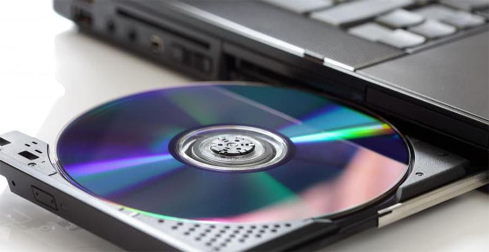
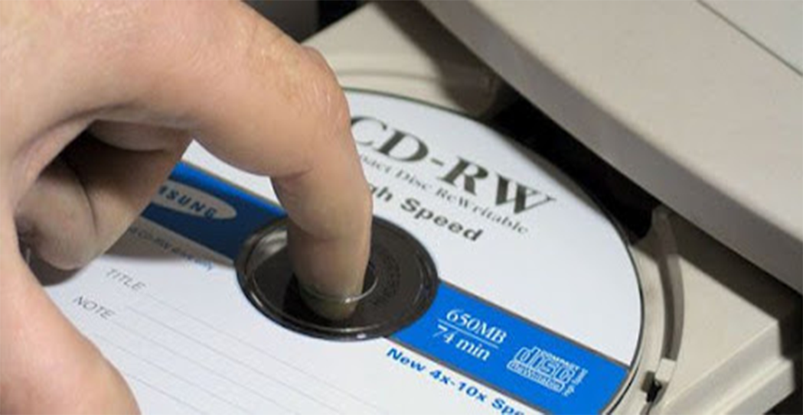

1
Intro
La principal función de los dispositivos de almacenamiento por medio
óptico es almacenar archivos multimedia, como música, fotos y videos.
Además de eso, son bastante utilizados para almacenar programas de
computadoras, juegos y aplicaciones comerciales. La grabación de los
datos es realizada a través de un rayo láser de alta precisión.
Algunos ejemplos de dispositivos de almacenamiento de información por
medio óptico son el CD, DVD y el Blu-Ray y sus respectivas lectoras como
CD-ROM, CD-RW, DVD-ROM y DVD-RW. Estos discos son capaces de almacenar
grandes cantidades de información y su utilización es bastante común,
principalmente en computadoras, radios, reproductores de DVD y Blu-Ray.
El valor de este medio es que es muy accesible y encontrado fácilmente
en papelerías, tiendas de informática, supermercados y demás comercios
Los dispositivos de almacenamiento por medio óptico son los más utilizados para el almacenamiento de información multimedia, para el almacenamiento de películas, música, y demás contenido multimedia. A pesar de eso también son muy utilizados para el almacenamiento de información y programas, siendo especialmente usados para la instalación de programas en las computadoras. La lectura de la información en un medio de almacenamiento óptico se realiza por medio de un rayo láser de alta precisión, que es proyectado en la superficie del medio. La superficie del medio es grabada con surcos microscópicos capaces de desviar el láser en diferentes direcciones, representando así diferente información, en la forma de dígitos binarios (bits).
Los dispositivos de almacenamiento por medio óptico son los más utilizados para el almacenamiento de información multimedia, para el almacenamiento de películas, música, y demás contenido multimedia. A pesar de eso también son muy utilizados para el almacenamiento de información y programas, siendo especialmente usados para la instalación de programas en las computadoras. La lectura de la información en un medio de almacenamiento óptico se realiza por medio de un rayo láser de alta precisión, que es proyectado en la superficie del medio. La superficie del medio es grabada con surcos microscópicos capaces de desviar el láser en diferentes direcciones, representando así diferente información, en la forma de dígitos binarios (bits).

2
Historia
Aunque la investigación en almacenamiento óptico de datos ha sido constante durante muchos decenios, el primer sistema popular es el disco compacto, que se introdujo en 1982. El disco compacto fue adaptado para el almacenamiento de datos por el Libro Amarillo en 1985 y es allí donde se crea el CD-ROM y vuelve a adaptarse para marcar la creación del CD-R y CD-RW en 1988. El disco compacto sigue siendo el estándar de facto para grabaciones de audio, aunque su lugar para otras grabaciones multimedia ha sido sustituida en gran medida por el DVD.
DVD (acrónimo de "Digital Versatile Disc") fue el sucesor del CD. Se creó en 1996, de nuevo inicialmente para el vídeo y el audio. Existen actualmente DVD grabables con formatos elaborados algún tiempo más tarde: DVD-R a finales de 1997 y DVD + R en 2002. A partir de 2007 el DVD se convirtió en el estándar para películas y almacenamiento de datos más allá de la capacidad de un CD.
Con el desarrollo de la televisión de alta definición, y la popularización de la banda ancha y almacenamiento digital de películas, un nuevo formato se desarrolló, y una vez más dando al Blu-ray. A partir de 2007 se han expuesto películas en los nuevos formatos, pero todavía no han hecho impacto en el mercado mundial para el almacenamiento de datos. Toshiba, después de sufrir una serie de pérdidas significativas frente el formato Blu-ray (de Sony), anunció la retirada de su HD DVD, el 19 de febrero de 2008.